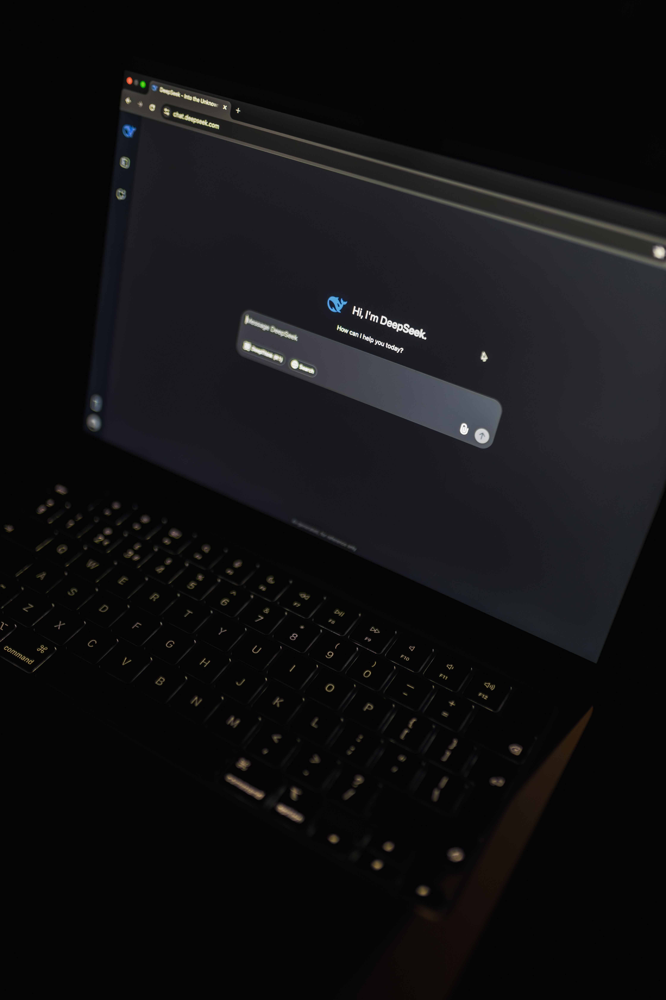

9 luglio 2026: il giorno in cui l'AI ha cambiato tutto

Il 9 luglio 2026 � destinato a entrare nei libri di storia dell'innovazione. In appena 24 ore, OpenAI, SpaceXAI, Anthropic e la robotica chirurgica hanno regalato al mondo annunci che da soli basterebbero a segnare un'intera annata.
OpenAI ha presentato GPT-Live, il primo modello vocale full-duplex al mondo: ascolta e parla simultaneamente. Nello stesso giorno ha rilasciato GPT-5.6 in tre versioni (Sol, Terra, Luna) e lanciato ChatGPT Work per le aziende.
Elon Musk ha risposto lanciando Grok 4.5 con il nuovo marchio SpaceXAI, focalizzato su coding avanzato e lavoro agentico in ambito finanziario e legale.

Anthropic ha svelato il J-space, uno spazio latente dove Claude elabora pensieri nascosti prima di verbalizzarli. La scoperta potrebbe rivoluzionare la trasparenza e la sicurezza dell'AI.
Un team internazionale ha pubblicato su Nature (8 luglio) il primo intervento al mondo di robot umanoidi teleoperati su maiali vivi. La tecnologia potrebbe portare la chirurgia robotica in ospedali rurali e nello spazio.
Infine, l'AI di OpenAI ha battuto tutti gli umani all'AtCoder World Tour Finals 2026, risolvendo tutti e 5 i problemi e totalizzando 8.300 punti contro i 4.300 del miglior umano.